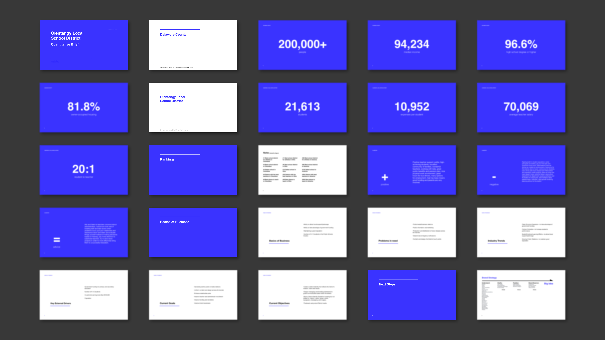
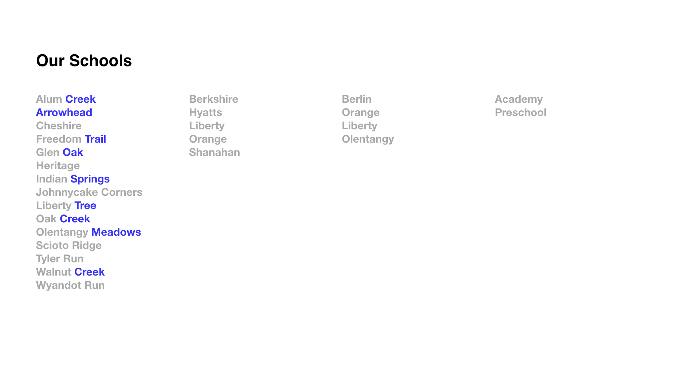
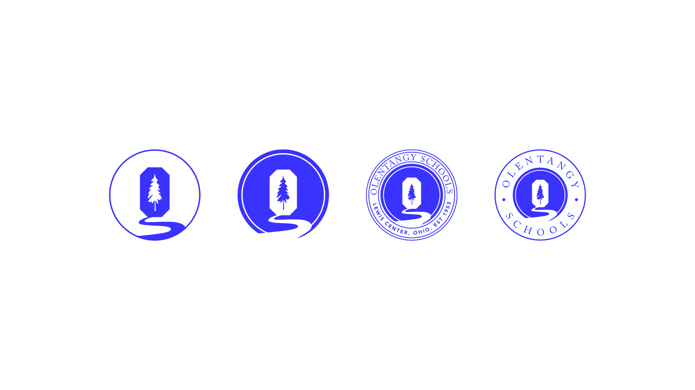
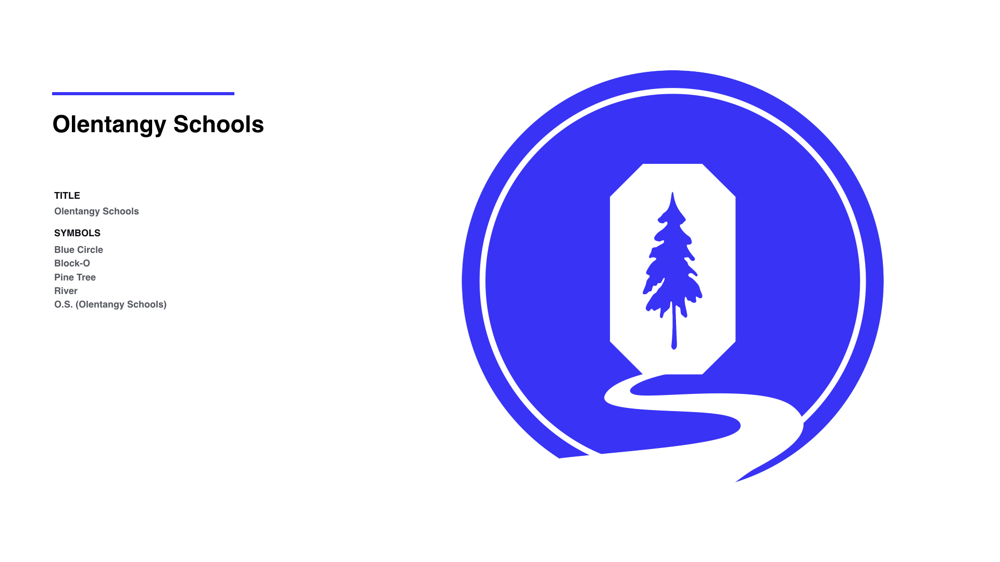

Olentangy Local School District is a thriving home to over 20,000 students and a community that celebrates their unity.
OLSD is managed by thousands of faculty and staff, many of which dedicate weeks to preparing and networking for their students. The result? A passionate obsessed community, working to provide maximum education for every student.
Scope of Project
Strategy helped clarify OLSD's purpose, find their voice, understand their community, and define their goals.
Messaging expressed the company's personality and values to build a consistent experience that resonates with customers and nurtures lasting relationships.
Logo Design that functions consistently and seamlessly across all mediums. From print to digital, a logo must adapt smoothly to the ever-changing context.
Outcome
A new website and marketing materials that support TBS as the premiere dental instrument provider that caters to modern dentists looking for comprehensive solutions.

Researching the Industry
After an initial meeting Lukas Murdock got to work on collecting information on OLSD. Over a two-week period, he surfaced important and relevant insights into both the K-12 industry and the community of Olentangy.

The One Story
The meetings focused on creating one singular story. Olentangy was established in 1953—with exponential growth over the last sixty-five years the district has a history. The team began looking for ways to represent that within meetings, with ones, symbols, patterns, but one that really stood out was the idea of a river.

Defining the Story
Remember those times when you would walk up to the riverside, asking if you really wanted to get your shoes soaked and eventually you decide to do it. You take your first step and the water is ice cold, you begin to feel it sink into your socks and flow through your toes.
The exploration, the uncovering of hidden gems that lay under every unturned stone, the carefree joy of splashing through the water. Each river has a story behind it, formed and shaped over time through its environment, slowly making its own path through life.
Rivers hold a significant place in all of our hearts, through good memories and bad, there is no view like a waterfront view.

"Simplistic, modern, clean, crisp design, reflecting one story." Krista Davis, Director of Communications